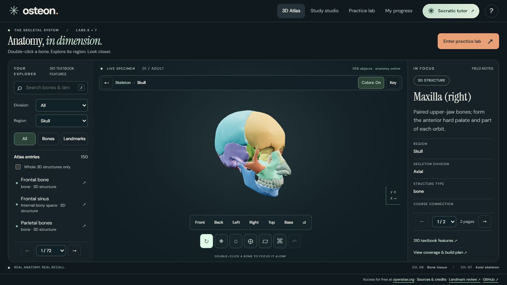
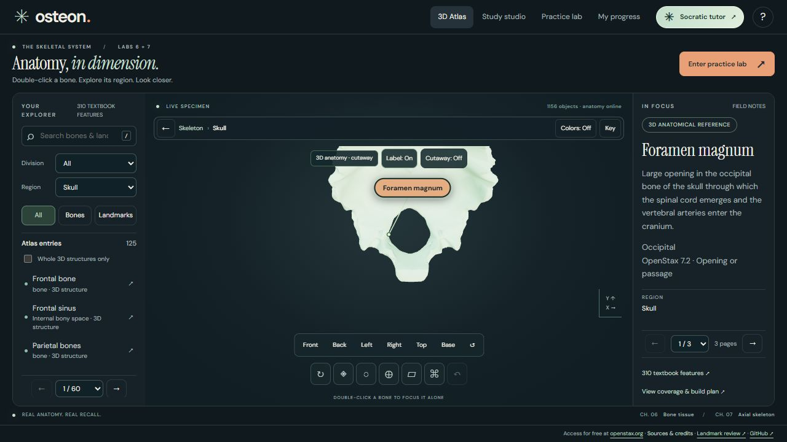
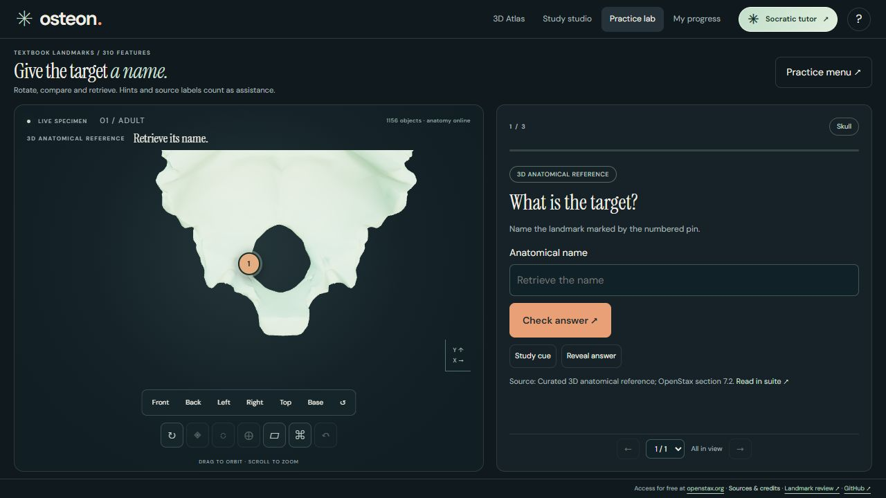
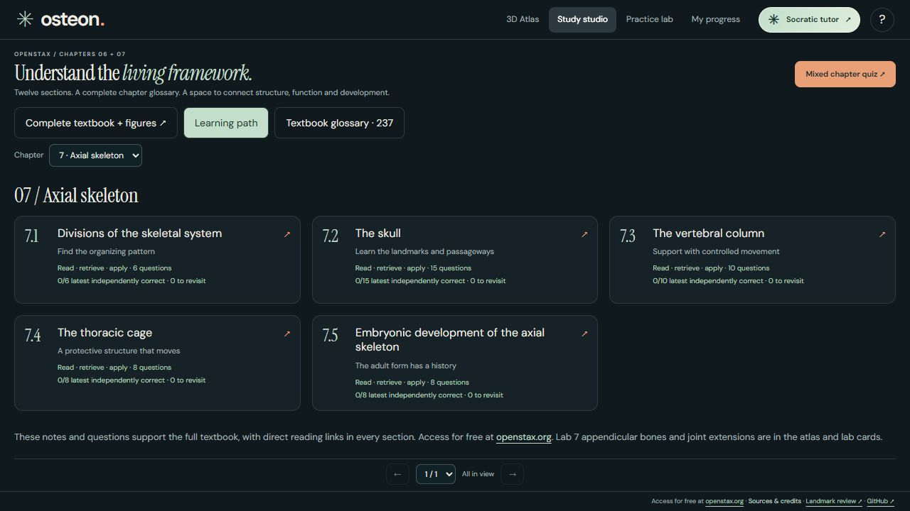
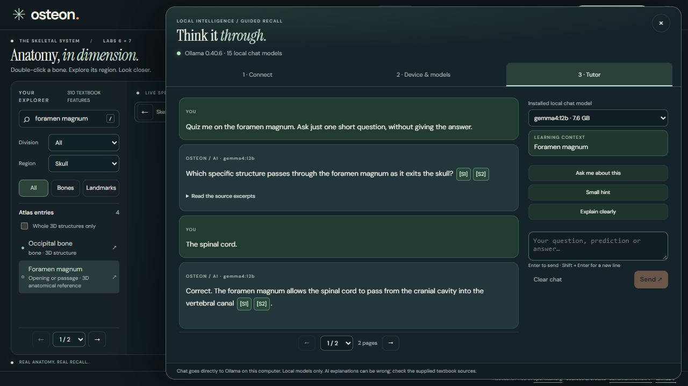
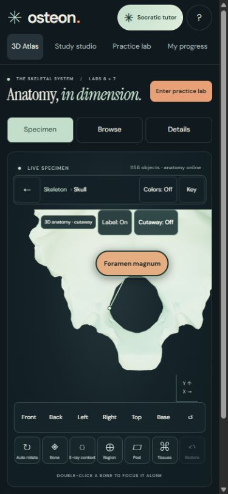

Find your bearings.
Double-click into a region. Rotate the skeleton and compare neighboring bones with optional regional colors.
Get hands-on with the skeleton. Find a landmark, test your recall, and think it through with a local Socratic tutor.
Free to open · No account needed · Desktop + phone
Optional local tutoring requires Ollama on your computer.
Warm female narration, English captions, and a full transcript. Local voice workflow and model comparison ↗
Double-click into a region. Rotate the skeleton and compare neighboring bones with optional regional colors.
Inspect the foramen magnum, hide the label, then identify a numbered target and check your answer.
Ask the local tutor for one question at a time. Answer in your own words and follow links to the supplied textbook readings.






The vertical edit shows phone layouts for exploration, the same opening, practice, tutor feedback, and chapter study. These are genuine browser captures from an isolated demonstration session. Crops, frame holds and cuts shorten waits and make the controls readable. The interface, quiz result, and gemma4:12b tutor replies were not fabricated. No personal study history appears.
Capture date: October 19, 2026. The warm female voice was generated locally with Qwen3-TTS 1.7B in ComfyUI. It is a designed synthetic voice, with no real-person voice reference and no music. See the model research, settings and reusable workflow.
The base atlas, chapter study and practice work without Ollama. Optional tutoring requires Ollama and a local chat model on your computer. Phone layouts were recorded using a browser viewport; inference ran on the recording PC. Some anatomy is explicitly identified as teaching reconstruction, and unresolved locating targets remain excluded from scoring. See the current accuracy review.